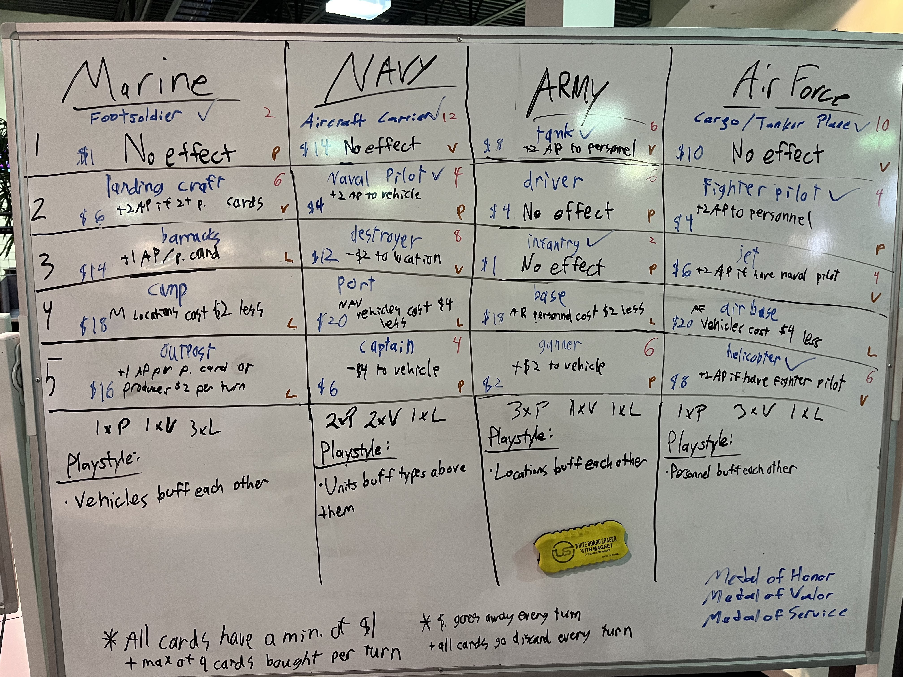
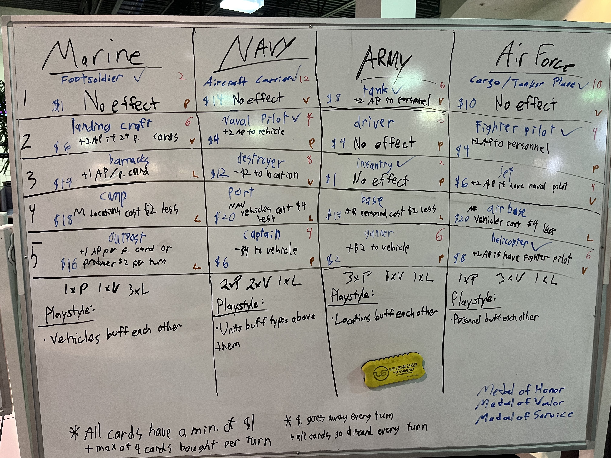

Role: Co-Designer
Platform: Tabletop Card Game
Software: Photoshop, Trello
Game Jam: UAT Veterans Day Game Jam, November 2023
Theme: Veterans Day
Project Description: This Game Jam was unique in that it was 24 hours long instead of 48 and we worked on a card game instead of a video game.
Because of this, I was able to focus on game design since programming wasn't involved. I worked in a group of 9, and all
of us knew each other since we worked on the same production studio project. The card game that we ended up developing
was a deck-building card game, where we gather cards and build up our decks in order to gather medals and win. I
contributed to a number of aspects about our game, such as overall card balance, game flow, and game mechanics, all of
which were written and documented on white boards.
Much of the focus for our discussions were on the implications of the mechanics. Since this
was a card game about Veterans Day and the army, we wanted to respect them without glorifying
tragedy or war. We also tried to avoid possible negative implications, such as buying medals instead of earning them.
Much of the overall game design revolved around avoiding these.
 
